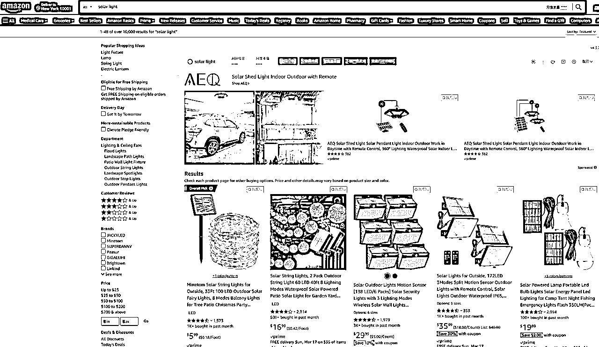

来源：https://blrwwxfhox.feishu.cn/docx/NwEcdx9PHoNnrjxTu69cRk42nNd
我叫小紫，今年是我在跨境电商行业的第七年了。
从0-1做过千单爆款，转化率高达79.3%。
目前是多家深圳跨境亿级卖家企业顾问。
我不定期会给大家分享一下专业知识，当作对自己的一个沉淀。
这是转化核心的第三期。
之前和大家分享了如何做图片、文案。
有许多读者朋友反馈，希望图片和文案能开成一堂课具体讲讲，
小紫有机会都给大家安排上~
今天准备和大家继续转化的话题，聊聊价格，是如何影响转化，又应该如何定价，如何优化。
顾客想买一个太阳能灯，
首先，会打开亚马逊主页，
再输入“solar light”关键词，
紧接着，类似的产品就会根据权重先后展示在他们面前，
权重大小是如何展示的，在我之前的文章都有提到过。

在搜索结果中，同类的产品都被放在一起，
这就给顾客提供了对比，提供了选择。
在传统定价中有一个观点：我们要按照产品价值来定价。
在线上购物环节中，这个观点就是无效的。
因为关键词搜索出来，
同质化的产品都被系统安排一同展示给买家，
意味着买家有多重参考。
买家可以对比同类产品的首图、标题、评论、价格、促销来决定，要不要点进我们的链接。
价格高于市场平均水平百分之50以上的流量是很难倾斜的。
买家也会觉得产品价格不值，购买的意愿会降低。
其次，价格太低也会被限制，因为它违背了市场的价格原则。
可能会让消费者怀疑产品的质量，同时也会降低产品的盈利。
亚马逊上定价，一定要清楚一点，
市场的定价，首先要参照你的对手，而不是看你的产品价值。
在实操中，我们一定要可以通过市场调研来确定我们自身产品，最合适的产品定价。
找准自己的产品定位，从而达到最佳的购买转化率。
关键是要合理规划利润，理清市场的价格等级，选择适合自己并且价格适中的定价。
毕竟卖货不是为了慈善，而是为了利润。
在市场中定价，离不开成本。
亚马逊的成本计算，其实已经很透明了，
这里直接给大家看张表就能理解。

没有成本的竞争力，就没有价格优势。
没有价格优势，就只能压缩推广空间。
中间如果多一个环节，基本上就不赚钱了。
比如退货率稍高几个点，
广告费又拖累几个点，
前期推广，跑个活动又亏损几个点...
很多新手卖家，判断自己产品到底能不能做，
也可以通过这个表格先粗算一版。
很多人说成本优势很难拿到，
但只要有成本优势，是大大提高产品成功率的。
为什么说产品定位对于价格来讲非常重要？
大家都知道，“性价比”不是卖点。
让产品卖爆的从来都不是性价比，而是用户认为你值得。
很多卖家信奉“螺旋打法”这一套。
于是疯狂卷价格、打价格战，
却忽略了消费者的其它诉求。
一旦原材料价格上涨，出现了价格更低的产品时，
它就无从下手，因为螺旋并不是长久之计。
如果你用“高性价比”作为核心卖点，
那么你大概率吸引来的，就是一群对价格敏感度高的顾客，
反而让真正的高价值用户觉得产品LOW。
但如果我们前期做好市场调研、竞争分析、用户画像...
了解目标市场的需求、趋势和竞争情况。
明确自己的产品定位，清晰自己的目标客户人群。
确定我们产品的核心竞争力，在定价方面留出一定空间，再来做营销。
产品定位是一个产品在市场中取得成功的关键之一。
但产品定位也并非一成不变，
市场需求什么时候变了，我们也要反复对产品做评估和调整。
因此，在实际推广中，我们的定价也需要根据市场变化，不断地进行优化。
大家应该听说过许多书本上的定价策略，
什么渗透定价、价值定价法、撇脂定价、锚定策略...
今天我用简化语言+可落地版本，
直接给大家总结出三种亚马逊推广常用方法：
假设，我们产品市场中位价格是29.99。
选择高价策略，我们前期可以设置新品价格为34.99美金;
打法一:
34.99高价格配合大额coupon (30%以上为佳) ，
广告手动精准来推，直接抓精准流量。
这个打法需要较多的广告费用较高。
这也是价格一定要留多操作空间的原因，
这个打法一定要对广告有较强的把控。
打法二:
高价格42.99配合高折扣code，做站外deal，
配合较激进的广告，把新品排名拉上去后再适当降价，
获得红色降价标签后，就可以正常开广告，然后等待后台推荐秒杀。
高价策略一定要注意，产品质量一定要过关，不然很可能反而引来差评，
同时，一定要结合高coupon或者会员折扣来操作。
那我们要打中价格策略;
那我们前期可以设置24.99的价格，
coupon设置10-15%左右，控制好广告预算，
广告最好开手动精准匹配，点击根据每天出单情况来把控，
不能一次给太多预算，也不能给固定预算然后不管它死活。
后续再开始手动词组匹配，新链接翻身的机会就大大提升。
低价策略最大的问题是没利润，并且后期可能很难提价，
所以对价格敏感的市场，一定要谨慎！
如果想前期打低价策略，那可以设置价格为20.99美金，
毛利很低的情况下，打低价要控制低成本开广告，
单次竞价一定要较低，建议开自动精准匹配，
随着链接逐渐出单，排名慢慢提升，再一点点去提价;
一般是不建议新品一上来就跟很低的价格，
除非你就是为了测款，这条链接卖完不卖了。
产品的定价一定离不开市场，
但也并不是说同行卖多少钱，我就卖多少钱，
选择什么样的价格策略，匹配什么样的运营手法，才是最关键的。
全文完。
迄今为止，讲了三期关于亚马逊如何做转化的主题:


🎁（备注 转化攻略）附转化系列内容汇总🎁
大家可以评论互动你想听的内容，
接下来我也会继续给大家整理转化相关的知识，不断丰富转化系列的内容。
以下是我的经典文章，99%关注我的人都会阅读，建议你一定要好好看一看：
精细化运营法：
干货型：
职场经验型：
如果觉得小紫的这篇文章聊得还挺有趣
欢迎来交个朋友~